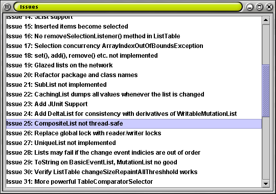

Glazed Lists Tutorial
Part 1 - Basics
In this tutorial we are going to build a program for browsing a list
of issues. We will demonstrate the features of Glazed Lists in this
program and provide the source code to use these features. In part one
of this tutorial we discuss Glazed Lists and build a simple application
that displays our list of issues within a JList.
EventList, like ArrayList or Vector
The EventList interface extends the familiar
java.util.List interface. This means it has the same
add(), set() and remove() methods
found in ArrayList and Vector.
But there are some differences between EventLists and the
plain java.util.List:
Event listeners: In order to propagate changes from a
source list to its various display widgets and transformations,
EventLists fire events when modified.
Concurrency: EventLists may be
accessed by multiple threads simultaneously so they provide easy-to-use
and powerful locks.
JList, JComboBox and JTable: Widgets with models
Swing is a user interface toolkit that uses the Model-View-Controller design
pattern throughout. This allows a Swing developer to focus on the data in a
component independent of how that data is displayed.
With Glazed Lists, the EventListModel class provides a
ListModel to populate a JList widget from any EventList.
Then as you add() and remove() on your
EventList, the JList widget responds automatically. Similarly
the EventTableModel will populate a JTable and the
EventComboBoxModel will populate a JComboBox.
A simple issue browser
We use Glazed Lists to display our issue list in a few simple steps. We
create a BasicEventList and populate it with a Collection
of issues. Then we create a EventListModel and specify that as
the model for our JList widget. Finally we display it all on
screen.
import java.util.*;
import java.io.*;
import java.net.*;
import javax.swing.*;
import java.awt.GridBagLayout;
import java.awt.GridBagConstraints;
import java.awt.Insets;
// glazed lists
import ca.odell.glazedlists.*;
import ca.odell.glazedlists.swing.*;
/**
* An IssueBrowser is a program for finding and viewing issues.
*
* @author <a href="mailto:jesse@odel.on.ca">Jesse Wilson</a>
*/
public class IssuesBrowser {
// create an event list to host the issues
EventList issuesEventList = new BasicEventList();
/**
* Load the issues from the specified URL.
*/
public void load(String issuesUrl) {
try {
InputStream issuesIn = new URL(issuesUrl).openConnection().getInputStream();
Collection sourceIssues = Issue.parseIssuezillaXML(issuesIn);
issuesEventList.addAll(sourceIssues);
} catch(IOException e) {
e.printStackTrace();
}
}
/**
* Display a frame for browsing issues.
*/
public void display() {
// create a panel with a table
JPanel panel = new JPanel();
panel.setLayout(new GridBagLayout());
EventListModel issuesListModel = new EventListModel(issuesEventList);
JList issuesJList = new JList(issuesListModel);
JScrollPane issuesListScrollPane = new JScrollPane(issuesJList);
panel.add(issuesListScrollPane, new GridBagConstraints(...));
// create a frame with that panel
JFrame frame = new JFrame("Issues");
frame.setDefaultCloseOperation(WindowConstants.EXIT_ON_CLOSE);
frame.setSize(540, 380);
frame.getContentPane().add(panel);
frame.show();
}
public static void main(String[] args) {
if(args.length != 1) {
System.out.println("Usage: IssueBrowser <issues url>");
return;
}
// load the issues and display the browser
String issuesUrl = args[0];
IssuesBrowser browser = new IssuesBrowser();
browser.load(issuesUrl);
browser.display();
}
}
|

So What?
So far we haven't taken advantage of the advanced features of Glazed Lists. But
with this simple framework in place we can easily add filtering and sorting to the
list. We can make changes to the display widget simply by making changes to its
source list. Should we decide to display our issues in a different widget such as a
JTable or JComboBox, that is now easy as well.